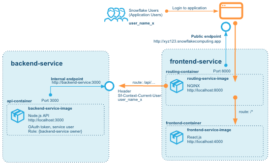
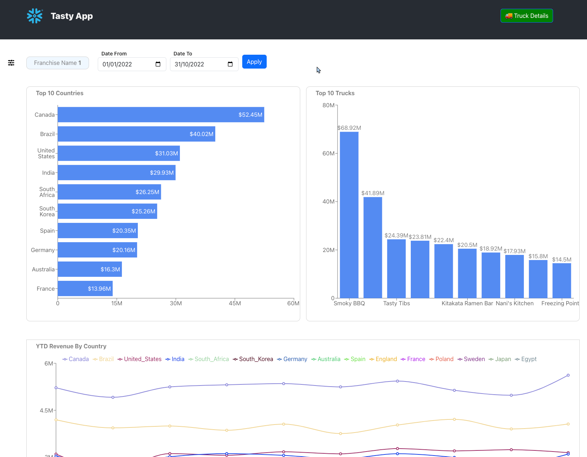

Snowflake is a terrific platform on which to build data applications. The unique characteristics and cloud-based design allow for building applications that scale with data and workload. This tutorial will go through how to build and deploy both the Processing Layer and the User Interface Layer paired with Snowflake as the Persistence Layer.
Our example will be using a fictional food truck franchise website, Tasty Bytes. We will be building a graphical user interface with charts and graphs for franchisees to be able to examine sales data related to their franchise of food trucks. After logging in via a login page, each franchisee will have one page that will show metrics at the franchise level, and another that will show metrics around the food truck brands for that franchise.
The Processing and User Interface Layers will be built using Node.js. The dataset is an orders history for Tasty Bytes.
The application itself will be built using containers and deployed to Snowflake. Snowpark Container Services (SPCS) allows the running of containerized workloads directly within Snowflake, ensuring that data doesn't need to be moved out of the Snowflake environment for processing.
This lab builds directly on the same code and solution as the Build a Data App with Snowflake quickstart, for in depth walk-through of the use case and the data, and how the application is built using Node Express and React you can review each step in that guide as well.
Prerequisites
- A Snowflake account, and familiarity with the Snowsight interface
- Privileges necessary to create a user, database, and warehouse in Snowflake
- Basic experience using git
- Intermediate knowledge of Node.js and React JS
- Intermediate knowledge of containerised applications
- GitHub Codespaces -or- Ability to install and run software on your computer
What You'll Learn
- How to configure and build a custom API Powered by Snowflake, written in Node.js
- How to configure and build a custom frontend website to communicate with the API, written in React and Node.js
- How to deploy a containerised application to Snowpark Container Services
- How to run and test the frontend and API on your machine
What You'll Need
Option 1, using GitHub Codespaces:
- GitHub Codespaces GitHub Account with credits for GitHub Codespaces
Option 2, local build:
What You'll Build
In this quickstart we will build and deploy a Data Application running on Snowpark Container Services.

The solution consists of two services hosted on Snowpark Container Services:
- The backend service - which hosts the API built on Node Express - API Powered by Snowflake built in Node.js
- The frontend service - which hosts the React JS Web Application that connects to that API, and a router service in NGINX that allows calls from the browser-based React frontend to be routed to the backend services also.
Without the router part of the frontend service, CORS would actually prevent the browser from talking to the backend service, even if we opened up a public endpoint for it. This is due to the fact that we cannot add our own headers to requests coming to the service endpoints - for security reasons Snowpark Container Services networking strips out any headers (but adds a few useful ones that we will use for authentication later).
Overview
In this part of the lab we'll set up our Snowflake account, create database structures to house our data, create a Virtual Warehouse to use for data loading and finally load our Tasty Bytes Food Truck orders data into our ORDERS table and run a few queries to get familiar with the data.
Step 2.1 Initial Snowflake Setup
For this part of the lab we will want to ensure we run all steps as the ACCOUNTADMIN role
--change role to accountadmin
use role accountadmin;
First we can create a Virtual Warehouse that can be used for data exploration and general querying in this lab. We'll create this warehouse with a size of Medium which is right sized for that use case in this lab.
--create a virtual warehouse for data exploration
create or replace warehouse query_wh with
warehouse_size = 'medium'
warehouse_type = 'standard'
auto_suspend = 300
auto_resume = true
min_cluster_count = 1
max_cluster_count = 1
scaling_policy = 'standard';
Step 2.2 Load Data
Next we will create a database and schema that will house the tables that store our application data.
--create the application database and schema
create or replace database frostbyte_tasty_bytes;
create or replace schema app;
This DDL will create the structure for the ORDERS table which is the main source of data for our application in this lab.
--create table structure for order data
create or replace table orders (
order_id number(38,0),
truck_id number(38,0),
order_ts timestamp_ntz(9),
order_detail_id number(38,0),
line_number number(38,0),
truck_brand_name varchar(16777216),
menu_type varchar(16777216),
primary_city varchar(16777216),
region varchar(16777216),
country varchar(16777216),
franchise_flag number(38,0),
franchise_id number(38,0),
franchisee_first_name varchar(16777216),
franchisee_last_name varchar(16777216),
location_id number(19,0),
customer_id number(38,0),
first_name varchar(16777216),
last_name varchar(16777216),
e_mail varchar(16777216),
phone_number varchar(16777216),
children_count varchar(16777216),
gender varchar(16777216),
marital_status varchar(16777216),
menu_item_id number(38,0),
menu_item_name varchar(16777216),
quantity number(5,0),
unit_price number(38,4),
price number(38,4),
order_amount number(38,4),
order_tax_amount varchar(16777216),
order_discount_amount varchar(16777216),
order_total number(38,4)
);
For loading data into the ORDERS table we will create a new Virtual Warehouse sized as a Large to help us quickly ingest the data we have stored in an S3 bucket.
--create a virtual warehouse for data loading
create or replace warehouse load_wh with
warehouse_size = 'large'
warehouse_type = 'standard'
auto_suspend = 300
auto_resume = true
min_cluster_count = 1
max_cluster_count = 1
scaling_policy = 'standard';
Next we have to create a STAGE which is a Snowflake object that points to a cloud storage location Snowflake can access to both ingest and query data. In this lab the data is stored in a publicly accessible AWS S3 bucket which we are referencing when creating the Stage object.
--create stage for loading orders data
create or replace stage tasty_bytes_app_stage
url = 's3://sfquickstarts/frostbyte_tastybytes/app/orders/';
Once we've created both the Virtual Warehouse we want to use for loading data and the Stage which points to where the data resides in cloud storage we can simply COPY the data from that Stage into our ORDERS table.
--copy data into orders table using the load wh
copy into orders from @tasty_bytes_app_stage;
Step 2.3 Explore Data
Now that we've loaded our data into the ORDERS table we can run a few queries to get familiar with it - but first we will want to change the Virtual Warehouse we're using from the LOAD_WH back to the QUERY_WH created earlier in the lab.
--change our Virtual Warehouse context to use our query_wh
use warehouse query_wh;
To begin with we can simply look at a sample of the entire table.
--simple query to look at 10 rows of data
select * from orders limit 10;
Next we can see how many records we've loaded into the table. Notice how quickly the query executes - this is due to Snowflake's unique architecture which enables a certain class of queries like this one to pull results from metadata instead of requiring compute to generate the result.
--query to count all records in the table
select count(*) from orders;
Finally we can run a more complex query to look at the total revenue by month where we will use a couple of functions to parse the month number and name from the ORDER_TS column in the ORDERS table.
--sales by month
select month(order_ts),monthname(order_ts), sum(price)
from orders
group by month(order_ts), monthname(order_ts)
order by month(order_ts);
Step 2.4 Further explore the Data
To understand and explore the data even more, you can look through the Quickstart for Building a Data Application - Lab 2: Queries that offers a number of steps to explore it.
If you already have done that, you can move directly to the next step in this guide. If not, you can continue below and explore the data further.
Our queries will be broken into two groups - Franchise queries and Truck Brand level queries. For the sake of ease we will focus on the following Franchise, Truck Brand and Date Range for this part of the lab.
- Franchise:
1 - Truck Brand:
Guac 'n Roll - Date Range:
1/1/2023 - 3/31/2023
Setting Snowsight Context
To ensure the correct context is use for these queries we will set our database, schema and Virtual Warehouse using the following SQL:
--set query context
use database frostbyte_tasty_bytes;
use schema app;
use warehouse query_wh;
Franchise Queries
To answer the business questions about how our overall Franchise business is doing we'll need to create the three following queries. All of the columns required for these exist in the ORDERS table and no joining of tables are required.
- Top 10 Countries Based on Revenue in a Time Window
- Top 10 Truck Brands Based on Revenue in a Time Window
- Year-to-Date Revenue, by Month, per Truck Brand
You can spend some time creating the queries for each of these and then check your answers against the provided queries below by expanding each section.
Top 10 Countries Based on Revenue in a Time Window
SELECT
TOP 10 country,
sum(price) AS revenue
FROM
app.orders
WHERE
date(order_ts) >= '2023-01-01'
AND date(order_ts) <= '2023-03-31'
AND franchise_id = 1
GROUP BY
country
ORDER BY
sum(price) desc;
Top 10 Truck Brands Based on Revenue in a Time Window
SELECT
TOP 10 truck_brand_name,
sum(price) AS revenue
FROM
app.orders
WHERE
date(order_ts) >= '2023-01-01'
AND date(order_ts) <= '2023-03-31'
AND franchise_id = 1
GROUP BY
truck_brand_name
ORDER BY
sum(price) desc;
Year-to-Date Revenue, by Month, per Truck Brand
SELECT
country,
month(order_ts) as date,
sum(price) AS revenue
FROM
app.orders
WHERE
year(order_ts) = 2023
AND franchise_id = 1
GROUP BY
country,
month(order_ts)
ORDER BY
sum(price) desc;
Truck Brand Queries
To answer the business questions about how our overall Franchise business is doing we'll need to create the three following queries. All of the columns required for these exist in the ORDERS table and no joining of tables are required.
- Total Sales by Day-of-Week
- Top Selling Items
- Top Selling items by Day-of-Week
You can spend some time creating the queries for each of these and then check your answers against the provided queries below by expanding each section.
Top 10 Countries Based on Revenue in a Time Window
SELECT
TOP 10 country,
sum(price) AS revenue
FROM
app.orders
WHERE
date(order_ts) >= '2023-01-01'
AND date(order_ts) <= '2023-03-31'
AND franchise_id = 1
GROUP BY
country
ORDER BY
sum(price) desc;
Top 10 Truck Brands Based on Revenue in a Time Window
SELECT
TOP 10 truck_brand_name,
sum(price) AS revenue
FROM
app.orders
WHERE
date(order_ts) >= '2023-01-01'
AND date(order_ts) <= '2023-03-31'
AND franchise_id = 1
GROUP BY
truck_brand_name
ORDER BY
sum(price) desc;
Total Sales by City and Day-of-Week
SELECT
country,
month(order_ts) as date,
sum(price) AS revenue
FROM
app.orders
WHERE
year(order_ts) = 2023
AND franchise_id = 1
GROUP BY
country,
month(order_ts)
ORDER BY
sum(price) desc;
Overview
Now that we've created our database, loaded data and developed the queries needed to answer our business questions, the last step before getting into application code is setting up the necessary objects so that the application can connect to Snowflake securely and query data on its own Virtual Warehouse. We will also set up the objects required to create and run services. The objects we will look at are:
- Compute Pools that are responsible for providing compute to the services once they run.
- Image Repositories that can hold docker images used by the services we create
- Services Ingress Security Integration
Step 3.1 Creating roles, permissions and virtual warehouse for running the application
Much like we created separate Virtual Warehouses for exploring and loading data, we will create one specifically for our service to use when executing queries on Snowflake.
We start by creating a role that can be responsible for administering the setup of the services and everything else. There are a number of permissions that can be granted, and in a production build environment, these permissions may instead be granted to different roles with different responsibilities.
USE DATABASE frostbyte_tasty_bytes;
USE SCHEMA APP;
CREATE ROLE tasty_app_admin_role;
GRANT ALL ON DATABASE frostbyte_tasty_bytes TO ROLE tasty_app_admin_role;
GRANT ALL ON SCHEMA frostbyte_tasty_bytes.app TO ROLE tasty_app_admin_role;
GRANT SELECT ON ALL TABLES IN SCHEMA frostbyte_tasty_bytes.app TO ROLE tasty_app_admin_role;
GRANT SELECT ON FUTURE TABLES IN SCHEMA frostbyte_tasty_bytes.app TO ROLE tasty_app_admin_role;
We can now create a Virtual Warehouse that the application will use to execute queries.
CREATE OR REPLACE WAREHOUSE tasty_app_warehouse WITH
WAREHOUSE_SIZE='X-SMALL'
AUTO_SUSPEND = 180
AUTO_RESUME = true
INITIALLY_SUSPENDED=false;
GRANT ALL ON WAREHOUSE tasty_app_warehouse TO ROLE tasty_app_admin_role;
Step 3.2 Creating Compute Pools for service to run on
The Compute Pools are used to run the services. We can create different pools for different purposes. In this example we create two different pools to run the services, one for the backend and one for the frontend. We could technically allow both services to use the same Compute Pool, in fact for this demo it would work very well, but in many scenarios the scaling requirements for the frontend and a backend may be different. Here we can see that the backend is given a pool of compute nodes that is slightly more scaled up than the nodes for the compute pool used for the frontend. There are multiple options for choosing the right instance family for a Compute Pool Create Compute Pool. This would be even more relevant if the backend needed to do some more compute heavy work, even to the point where it needed to have GPU enabled nodes.
CREATE COMPUTE POOL tasty_app_backend_compute_pool
MIN_NODES = 1
MAX_NODES = 1
INSTANCE_FAMILY = CPU_X64_S;
GRANT USAGE ON COMPUTE POOL tasty_app_backend_compute_pool TO ROLE tasty_app_admin_role;
GRANT MONITOR ON COMPUTE POOL tasty_app_backend_compute_pool TO ROLE tasty_app_admin_role;
CREATE COMPUTE POOL tasty_app_frontend_compute_pool
MIN_NODES = 1
MAX_NODES = 1
INSTANCE_FAMILY = CPU_X64_XS;
GRANT USAGE ON COMPUTE POOL tasty_app_frontend_compute_pool TO ROLE tasty_app_admin_role;
GRANT MONITOR ON COMPUTE POOL tasty_app_frontend_compute_pool TO ROLE tasty_app_admin_role;
The tasty_app_admin_role role must also be given the permission to bind service endpoints for services.
GRANT BIND SERVICE ENDPOINT ON ACCOUNT TO ROLE tasty_app_admin_role;
Step 3.3 Set up docker image repositories and stage for service specifications
We can now ensure that the current user can use the admin role.
SET sql = ('GRANT ROLE tasty_app_admin_role TO USER ' || CURRENT_USER() || '');
EXECUTE IMMEDIATE $sql;
USE ROLE tasty_app_admin_role;
Here we create the IMAGE REPOSITORY to hold images for services.
-- Create image repository
CREATE OR REPLACE IMAGE REPOSITORY tasty_app_repository;
-- Show the repo we just created
SHOW IMAGE REPOSITORIES;
-- List images in repo (can be called later to verify that images have been pushed to the repo)
call system$registry_list_images('/frostbyte_tasty_bytes/app/tasty_app_repository');
We can also create a stage to hold service specification files, although for this guide we will provide the specifications inline with the service creation.
-- Create a stage to hold service specification files
CREATE STAGE tasty_app_stage DIRECTORY = ( ENABLE = true );
Step 3.4 Create external users role and users for the external access
In order to allow the application users to access the application we can create dedicated USERS for each user. In the guide Build a Data App with Snowflake users were actually stored in a USERS table that was created, where hashed passwords were stored and could be used to check the login from the frontend. Create that table by running the following SQL:
-- Create Users table for the Website
create or replace table users (
user_id number(38,0) autoincrement,
user_name varchar(16777216) not null,
hashed_password varchar(16777216),
franchise_id number(38,0),
password_date timestamp_ntz(9),
status boolean,
unique (user_name)
);
-- Add Franchisee logins
insert into users
values
(1,'user1','$2b$10$v0IoU/pokkiM13e.eayf1u3DkgtIBMGO1uRO2O.mlb2K2cLztV5vy',1,current_timestamp,TRUE),
(2,'user2','$2b$10$e2TXM/kLlazbH1xl31SeOe6RTyfL3E9mE8sZZsU33AE52rO.u44JC',120,current_timestamp,TRUE),
(3,'user3','$2b$10$WX4e1LAC.rAabBJV58RuKerEK4T/U4htgXrmedTa5oiGCWIRHwe0e',271,current_timestamp,TRUE);
In this guide, we will create those users as actual Snowflake Users and give them a role that is allowed to access the services we later create. This allows us to utilize the OAuth sign-in we created earlier to authenticate users.
We can create the users like this:
USE ROLE ACCOUNTADMIN;
CREATE ROLE tasty_app_ext_role;
GRANT USAGE ON DATABASE frostbyte_tasty_bytes TO ROLE tasty_app_ext_role;
GRANT USAGE ON SCHEMA app TO ROLE tasty_app_ext_role;
CREATE USER IF NOT EXISTS user1 PASSWORD='password1' MUST_CHANGE_PASSWORD=TRUE DEFAULT_ROLE=tasty_app_ext_role;
GRANT ROLE tasty_app_ext_role TO USER user1;
Not that we force the user to change the password on the first login here. When testing it you can choose to set MUST_CHANGE_PASSWORD=FALSE, but in a real scenario these passwords should be changed on first login.
Just for reference, the users that were created in the earlier database set up lab are the following:
User name | Hashed password | Franchise id | Plaintext password |
user1 | $2b$10$3/teX....iH7NI1SjoTjhi74a | 1 | password1 |
user2 | $2b$10$9wdGi....U8qeK/nX3c9HV8VW | 120 | password120 |
user3 | $2b$10$CNZif....IXZFepwrGtZbGqIO | 271 | password271 |
We can create all the users this way:
CREATE USER IF NOT EXISTS user2 PASSWORD='password120' MUST_CHANGE_PASSWORD=TRUE DEFAULT_ROLE=tasty_app_ext_role;
GRANT ROLE tasty_app_ext_role TO USER user2;
CREATE USER IF NOT EXISTS user3 PASSWORD='password270' MUST_CHANGE_PASSWORD=TRUE DEFAULT_ROLE=tasty_app_ext_role;
GRANT ROLE tasty_app_ext_role TO USER user3;
Overview
We now look at the code for the backend and frontend to adapt it to run in Snowpark Container Services.
Option 1 - Build using GitHub Codespaces
If you have access to GitHub and credits on an account that let's you run GitHub Codespaces, you can directly build the entire code and push the containerized images to the image repository in the cloud environment.
If you don't have access to this, or prefer to build this locally, go to Option 2 instead.
First, create your on fork of the main repository, go to the GitHub repository at GitHub: Snowflake-Labs/sfguide-tasty-bytes-zero-to-app-with-spcs and create your own fork of the repo. 
Once you have your own fork, go to the ‘<> CODE' button and select ‘Codespaces' and create a new. 
The code for this lab is hosted on GitHub. Start by cloning the repository into a separate folder. Note that we are cloning a specific branch spcs here that contains the code adapted for this guide.
git clone https://github.com/Snowflake-Labs/sfguide-tasty-bytes-zero-to-app-with-spcs.git zero-to-app-spcs
Change directory to the zero-to-app-spcs/ directory that is created in the clone above. You should now have a directory with a /src subdirectory that contains /backend and /frontend directories.
Step 4.1 The backend service
Let's start with looking at the backend code. Open a terminal and go to the /src/backend directory.
First ensure that you have Docker installed on you environment:
docker --version
-- Docker version 24.0.6, build ed223bc
For local testing, we can then let the backend connect to the Snowflake account using credentials we supply in the environment variables. Copy the .env.example file to .env and fill out the details for your account there.
cp .env.example .env
sed -i -e "s/{INSERT A RANDOM STRING HERE}/$(openssl rand -base64 12)/" .env
sed -i -e "s/{INSERT ANOTHER RANDOM STRING HERE}/$(openssl rand -base64 12)/" .env
:
SNOWFLAKE_ACCOUNT={INSERT_ACCOUNT_NAME_HERE}
SNOWFLAKE_USERNAME={INSERT_USER_NAME_HERE}
SNOWFLAKE_PASSWORD={INSERT_PASSWORD_HERE}
SNOWFLAKE_ROLE=TASTY_APP_ADMIN_ROLE
SNOWFLAKE_WAREHOUSE=TASTY_APP_WAREHOUSE
SNOWFLAKE_DATABASE=frostbyte_tasty_bytes
SNOWFLAKE_SCHEMA=app
ACCESS_TOKEN_SECRET=a1to.....9wlnNq
REFRESH_TOKEN_SECRET=KVDq9.....icVNh
PORT=3000
CLIENT_VALIDATION=Dev
There is a docker-compose.yaml file in this folder that we will use to spin up a local service using this environment:
docker compose up
Try to access the API by calling the endpoint now. If you are in GitHub Codespaces, you will be offered a unique URL that is generated for you, like ‘https://-3000.app.github.dev/' that you can access, if you are on your local environment, it will be a localhost URL, like ‘http://localhost:3000/' 
curl https://<random-generated-identifier>-3000.app.github.dev/franchise/1
or, open up a new terminal and access it (this will also work inside Codespaces)
curl http://localhost:3000/franchise/1
This should return the following JSON response:
{
"TRUCK_BRAND_NAMES":[
"The Mac Shack",
"Smoky BBQ",
"Freezing Point",
"Guac n' Roll",
"The Mega Melt",
"Plant Palace",
"Tasty Tibs",
"Nani's Kitchen",
"Better Off Bread",
"Peking Truck",
"Kitakata Ramen Bar",
"Cheeky Greek",
"Le Coin des Crêpes",
"Revenge of the Curds",
"Not the Wurst Hot Dogs"
],
"START_DATE":"2022-01-01 08:00:01.000",
"END_DATE":"2022-10-31 22:59:29.000"
}
Step 4.2 Authenticating and authorizing service users
Currently there is no authentication of the user calling this endpoint. We will change that to take advantage of the mechanism built into Snowflake Container Services.
In the earlier guide Build a Data App with Snowflake authentication was implemented using JWT tokens, where the client frontend called a login endpoint and provider user name and password, and the service looked that up in the database (the USERS table that is also created for this lab.) and then supplied the client with an accesstoken that could be passed along with future calls to the API. With SPCS this will not work because the environment strips any request headers from calls to the public endpoints as they are routed to the service, meaning we cannot evaluate a Bearer Authentication token in calls from the client to the backend. Remember, with a React application, the frontend is running directly as javascript in the client's browser, even if the code is served from the frontend service, so calls to the API are coming from the end users' browsers, not from the internal service hosting the frontend.
What Snowpark Container Services offers is a different authentication model. Any user accessing the public endpoints for the services, needs to log in with a USER to the Snowflake interface.

In this example, one of the users we created in the earlier steps (user1, user2, user3,...) can now log in here. Once the user is authenticated, Snowpark Container Services adds that user name as a special header Sf-Context-Current-User to any request to the public endpoints. Since the environment strips away any other headers, there is no risk that the client can tamper with the value of this either, so from the perspective of the backend service, we can trust that the value in that header represents the user that authenticated with Snowflake.
The request headers reaching the service endpoint will look something like this for a normal call:
host: 'backend-service:3000'
referer: 'https://randomlygeneratedendpointname.snowflakecomputing.app/login'
content-type: 'application/json'
user-agent: 'Mozilla/5.0 (Macintosh; Intel Mac OS X 10_15_7) AppleWebKit/537.36 (KHTML, like Gecko) Chrome/120.0.0.0 Safari/537.36'
accept: '*/*'
'sf-context-current-user': 'USER1'
...
...
With this we can then look up that user and ensure that they have access to the application.
Go to the code for auth.js, it contains code to validate this header and look up the user in the database, in order to check its association with a franchise. The following code does that:
function lookupUser(user_name) {
return new Promise(async function (result, error) {
snowflake.getConnection().then(conn =>
conn.execute({
sqlText: sql_queries.verify_user,
binds: [user_name],
complete: (err, stmt, rows) => {
if (err) {
error({result: false, message: 'Unable to lookup user', error:err});
} else {
if (rows.length == 0) {
result({message: 'User does not exist'});
} else {
user_row = rows[0]
user_name = user_row.USER_NAME;
franchise_id = user_row.FRANCHISE_ID;
hashed_password = user_row.HASHED_PASSWORD;
data = {result: true, validation: 'Snowflake', user_name: user_name, franchise_id: franchise_id, hashed_password: hashed_password };
result(data);
}
}
},
}));
});
}
...
function validateSnowflakeHeader(req, res, next) {
if (!req.headers['sf-context-current-user']) {
console.warn('Validation mode is Snowflake but sf-context-current-user header is missing - user is not validated');
res.status(422).send("Incorrect data");
return
}
const login_user = req.headers['sf-context-current-user']
console.log('sf-context-current-user: ' + login_user);
lookupUser(login_user).then(result => {
if (result.result === true){
console.log('Authorizing user ' + result.user_name + ' for franchise: ' + result.franchise_id);
req.user = { validation: 'Snowflake', user: result.user_name, franchise: result.franchise_id };
next();
} else {
console.warn('User does not exist: ' + login_user);
res.status(401).json('Invalid user or password');
return
}
}, error => {
console.error(error.message, error.error);
res.status(500).json({ error: error.message });
return
});
};
Comparing this to the code that validates a JWT access token it is similar, but we here also have to look up the user in a database call, because unlike the JWT we cannot securely pass any additional information (like the franchise_id in the toke), the only value we can trust here is the user header, since it is securely set by the SPCS environment and cannot be tampered with by a javascript client. The rest of the code in that file is supporting the authentication using other methods, but this is the only one that will be used in this guide and when we deploy the services to Snowflake.
Also review the file /routes/login.js that introduces a new endpoint /authorize that responds with an accesstoken containing the user id and franchise id when called with a header of Sf-Context-Current-User. This can be used by the frontend later on to check what franchise to set in the UI. Note that this endpoint also returns a JWT token, but we are only using that format to keep the code in the frontend as similar to the original code as possible, we are not using the JWT access token for future authorization of calls from the frontend to the backend.
This endpoint is similar to the code in auth.js for validating a user.
router.get("/authorize", async (req, res) => {
console.log('Authorize with request headers:')
if (!req.headers['sf-context-current-user']) {
res.status(422).send("Incorrect data");
return
}
const login_user = req.headers['sf-context-current-user']
console.log(`Authorizing user ${login_user} from context header`);
auth.lookupUser(login_user).then(result => {
if (result.result === true) {
console.log('Authorizing user ' + result.user_name + ' for franchise: ' + result.franchise_id);
const accessToken = auth.generateAccessToken({ user: result.user_name, franchise: result.franchise_id, preauthorized: true });
const refreshToken = auth.generateRefreshToken({ user: result.user_name, franchise: result.franchise_id, preauthorized: true });
res.status(200).json({ accessToken: accessToken, refreshToken: refreshToken });
return
} else {
console.warn('User does not exist: ' + login_user);
res.status(401).json('Invalid user or password');
return
}
}, error => {
console.error(error.message, error.error);
res.status(500).json({ error: error.message });
return
});
});
With this we test run the application locally and simulate the SPCS environment. Change the .env file to use Snowflake authentication instead:
CLIENT_VALIDATION=Snowflake
Restart the service running by pressing CTRL+c in the terminal where you started the docker service. Restart it again with docker compose up again. Once running you should now see the output:
backend-backend_service-1 | Starting up Node Express, build version 00013
backend-backend_service-1 | Server running on port 3000
backend-backend_service-1 | Environment: development
backend-backend_service-1 | CORS origin allowed: http://localhost:4000
backend-backend_service-1 | Client validation: Snowflake
backend-backend_service-1 | Using warehouse: TASTY_APP_WAREHOUSE
backend-backend_service-1 | Using role: TASTY_APP_ADMIN_ROLE
Calling one of the endpoints now results in a HTTP 422 response and the test Incorrect data (which is what we expect from the validateSnowflakeHeader in auth.js). If we provide a header that looks like the SPCS authentication header it now uses that to validate the user:
curl --header "Sf-Context-Current-User:user1" http://localhost:3000/franchise/1
This now responds with a the expected HTTP 200 response:
{
"TRUCK_BRAND_NAMES":["The Mac Shack","Smoky BBQ","Freezing Point","Guac n' Roll","The Mega Melt","Plant Palace","Tasty Tibs","Nani's Kitchen","Better Off Bread","Peking Truck","Kitakata Ramen Bar","Cheeky Greek","Le Coin des Crêpes","Revenge of the Curds","Not the Wurst Hot Dogs"
],
"START_DATE":"2022-01-01 08:00:01.000",
"END_DATE":"2022-10-31 22:59:29.000"
}
You can now terminate the service with CTRL+c and we can then destroy the local Docker service and images we just used for testing:
docker rm backend-backend_service-1
docker image rm backend-backend_service
Step 4.3 Connecting to Snowflake data
With this update, we can now look at how the backend service can access the data in the Snowflake tables and views. In the self hosted version of of the code (as in the Build a Data App with Snowflake) we use a key pair authentication schema to connect the service to Snowflake. For a service running on Snowpark Container Services, we can benefit from the service already running on Snowflake and we can use a provided and pre-loaded authentication model based on OAuth. This is available for every service running on SPCS.
Open the file connect.js and look at how the code is sending the options for the connection to Snowflake:
const options = {
database: process.env.SNOWFLAKE_DATABASE,
schema: process.env.SNOWFLAKE_SCHEMA,
warehouse: process.env.SNOWFLAKE_WAREHOUSE,
};
if (fs.existsSync('/snowflake/session/token')) {
options.token = fs.readFileSync('/snowflake/session/token', 'ascii');
options.authenticator = "OAUTH";
options.account = process.env.SNOWFLAKE_ACCOUNT;
options.accessUrl = 'https://' + process.env.SNOWFLAKE_HOST;
} else {
options.account = process.env.SNOWFLAKE_ACCOUNT;
options.username = process.env.SNOWFLAKE_USERNAME;
options.role = process.env.SNOWFLAKE_ROLE;
options.password = process.env.SNOWFLAKE_PASSWORD;
};
When the service is running on SPCS, the file located at /snowflake/session/token will contain an OAuth token that is pre-validated for accessing Snowflake. This means we don't need to supply a user and password for the connection. This token is authenticated for a temporary user that is given the same role as the OWNER for the Service being called. This is an important detail, as the service will be connecting as the very role that created it (here it will be tasty_app_admin_role), so think of it as a service account type of user that is connecting. This is analogous to how the original solution worked, but in there we created a dedicated user that the service connected as.
Once connected, the rest of the backend code is working the same, regardless if it is running in the SPCS environment or somewhere else, like a local testing environment.
Overview
We can now look at how the frontend has been updated to take advantage of the changes and for us to be able to run it on SPCS.
There are two areas that is updated here to allow it to run in the new environment:
- Authentication - by placing the service behind a public endpoint that forces users to login, it no longer makes sense to keep the login form in the client, the required authentication is already captured by the Snowflake OAuth login form
- Routing from client to the backend API, we can no longer directly control the CORS directives for the services, and calls from the client are actually made directly from the users' browsers.
The routing is something that changes somewhat significantly from the original solution. Instead of adding a CORS directive to the backend (e.g. allowing calls from another origin), we introduce a router service that takes calls from the public endpoint and routes them to either the frontend service, or the backend service, allowing us to maintain a single public endpoint.
The router ensures that calls made to routes starting with /api are forwarded to the backend-service, whereas any other calls /* are routed to the frontend container running in the same service as the router: 
Step 5.1 Building the router
The router is a simple service based on NGINX. The code is very simple and serves a NGINX server that is given a configuration that defines the different routes, open /src/frontend/router/nginx.conf.template:
events {
worker_connections 1024;
}
http {
server {
listen 8000;
listen [::]:8000;
server_name localhost;
location / {
proxy_pass http://$FRONTEND_SERVICE/;
}
location /api {
rewrite /api/(.*) /$1 break;
proxy_pass http://$BACKEND_SERVICE/;
}
location /test {
add_header Content-Type text/html;
return 200 '<html><body><h1>This is the router testpage</h1><li>Sf-Context-Current-User: $http_sf_context_current_user</li><li>Host: $http_host</li><li>Frontend Server: $FRONTEND_SERVICE</li><li>Backend Server: $BACKEND_SERVICE</li></body></html>';
}
}
}
There are three routes in here, /, /api /test. The last one simply outputs debug information and can help to understand that the setup is correct (it should be removed when not testing out the services).
The /api route means that anything prefixed with that gets rewritten to remove the "/api" part and then passed forward to the backend service URL. For all other calls they should be forwarded directly to the frontend service URL (which should be running on the same service as the router, in a different container).
The $FRONTEND_SERVICE and $BACKEND_SERVICE variables allow us to dynamically replace these values when the Docker image is being used. If we look at the Dockerfile:
FROM nginx:alpine
ARG required FRONTEND_SERVICE
ARG required BACKEND_SERVICE
RUN apk update && apk add bash
EXPOSE 8000
COPY nginx.conf.template /nginx.conf.template
CMD ["/bin/sh" , "-c" , "envsubst '$FRONTEND_SERVICE $BACKEND_SERVICE' < /nginx.conf.template > /etc/nginx/nginx.conf && exec nginx -g 'daemon off;'"]
The last line substitutes these variables for values taken from the environment it is running in, before copying the contents into the nginx.conf file and starting up the server.
You can test the router by running the container locally. From /src/frontend run the following: bash
docker compose --env-file .env.local.example up
This should run the router and the frontend on local ports. Test it out by running: bash
curl http://localhost:8888/test
It should return HTLM, like: html
<html><body><h1>This is the router testpage</h1><li>Sf-Context-Current-User: </li><li>Host: localhost:8888</li><li>Frontend Server: localhost:4000</li><li>Backend Server: localhost:3000</li></body></html>
Terminate the running containers byt pressing ctrl+c in the terminal again.
Step 5.2 Updating the frontend code
The frontend code itself needs fewer changes to adapt to the new environment. Primarily here we are looking at removing the actual login form and user management in favor of using the built in login capability.

In a commonly shared file Utils.js we can provide some methods that will help check how to communicate with the backend and to verify if the login button should be visible.
export function enableLogin() {
if (clientValidation === 'JWT') {
return true;
} else if (clientValidation === 'Snowflake') {
return false;
}
console.log(` - Login disabled`);
return false;
}
export function isLoggedIn(state) {
if (clientValidation === 'JWT') {
if (state){
return (state.accessToken != null);
}
} else if (clientValidation === 'Snowflake') {
if (state){
return (state.accessToken != null);
}
} else if (clientValidation === 'Dev') {
if (state){
return (state.franchise != null);
}
}
return false;
}
We can then use these functions to decide if the Login button should be visible or not:
E.g. in Home.js, the logout button is conditionally shown using the above function:
<div className='home-header'>
<Image src='bug-sno-R-blue.png' className='homeLogo' />
<h1 className="homeTitle"> Tasty App</h1>
<Button className='backBtn' onClick={gotoDetails}> 🚚 Truck Details</Button>
{ enableLogin() &&
<Button className='home-logoutBtn' onClick={logout}>⎋ Logout</Button>
}
</div>
And in the App.js routing we can use the same functions to conditionally route the user depending on if they are logged in or not.
function App() {
const LoginWrapper = () => {
const location = useLocation();
return isLoggedIn(location.state) ? <Outlet /> : <Navigate to="/login" replace />;
};
return (
// Routing for the App.
<BrowserRouter>
<Routes>
<Route path="/login" element={ <Login /> } />
<Route element={<LoginWrapper />}>
<Route path="/" element={ <Home /> } />
<Route path="/home" element={ <Home /> } />
<Route path="/details" element={ <Details /> } />
</Route>
</Routes>
</BrowserRouter>
);
}
Finally we add a call in Login.js to check the /authenticate endpoint of the backend.
const clientValidation = process.env.REACT_APP_CLIENT_VALIDATION;
...
function checkAuthentication() {
if (clientValidation === 'JWT') {
//console.log(` - Validation enabled`);
} else if (clientValidation === 'Snowflake') {
console.log(`Checking client validation ${clientValidation} - Checking authorize endpoint of API`);
const requestOptions = {
method: 'GET',
headers: { 'Content-Type': 'application/json', 'Sf-Context-Current-User': 'user1' }
};
fetch(backendURL + '/authorize', requestOptions)
.then((result) => {
if (result.ok) {
result.json()
.then((data) => {
const token = decodeToken(data.accessToken);
data.franchise = token.franchise;
navigate("/", { state: data });
});
} else {
console.warn('Current user is not authorized to use the application');
}
});
} else {
console.warn(`Checking client validation ${clientValidation} - Validation disabled - hard coding franchise "1"`);
const data = { franchise: 1 };
navigate("/", { state: data });
}
return false;
};
When the /login page shows, this call is run and if the result is that a user context is returned then it navigates to the default route /. This all ensures that the same code runs both in the SPCS environment and in another hosting environment. By setting the ENVIRONMENT variable REACT_APP_CLIENT_VALIDATION to Snowflake when deploying this we ensure the method is called and evaluated.
Remember, the /authorize endpoint of the backend service should return a JWT access token containing the user name and franchise when called from an authenticated context in SPCS, like the following result:
{
"accessToken": "eyJhbGc....goa_RUCl85NeM",
"refreshToken": "eyJhbGc.....VR5fnViRksNI"
}
And when decoded, that token should look something like this:
{
"user": "user1",
"franchise": 1,
"preauthorized": true,
"iat": 1705924945,
"exp": 1705946545
}
You can try this if you like, by starting up the backend again in a new Terminal window:
cd src/backend
docker compose up
And then directly call the authorize endpoint:
curl --header "Sf-Context-Current-User:user1" http://localhost:3000/authorize
Copy the content of the accessToken attribute in the JSON response, and then go to https://jwt.io/ and paste the response there. This should decode the token for you and show an output like above.
Additionally, if you want to verify this token, you can supply the random string we added to the .env file for the backend.
Throughout the Home.js and Details.js we then update all call to the backend to use the common helper function from Utils.js to call the backend, like this:
const url = `${backendURL}/franchise/${franchise}/trucks?start=${fromDate}&end=${toDate}`;
fetch(url, getRequestOptions(location.state))
.then((result) => result.json())
.then((data) => {
setTop10Trucks(data)
let t = [];
for (let i=0; i<data.length; i++) {
t.push(data[i].TRUCK_BRAND_NAME);
}
setTrucks(t);
})
With those changes, the code should be ready to be Dockerized and then deployed in Snowpark Container Services.
Now we can prepare the services for deployment, and we will do that by building Docker container images for each service to deploy.
Ensure that you have Docker installed on you environment:
docker --version
-- Docker version 24.0.6, build ed223bc
Step 6.1 Defining Dockerfiles for services
Each service that we will spin up consists of one or more containers, and each container is built on a Docker image.
Let's start with the Dockerfile for the backend service. In the /backend/Dockerfile we are exposing the port this service is exposed on. By putting it in as a variable ${PORT} we can set it through the service definition.
FROM node:18
ARG PORT
WORKDIR /src/app
COPY package.json /src/app/package.json
RUN npm install
ENV PORT=${PORT}
EXPOSE ${PORT}
COPY . /src/app
CMD ["npm", "run", "serve"]
Ensure that there is a .env file there that will be picked up by the Docker build. It should look like this:
SNOWFLAKE_WAREHOUSE=TASTY_APP_WAREHOUSE
SNOWFLAKE_DATABASE=FROSTBUTE_TASTY_BYTES
SNOWFLAKE_SCHEMA=APP
ACCESS_TOKEN_SECRET={INSERT A RANDOM STRING HERE}
REFRESH_TOKEN_SECRET={INSERT A RANDOM STRING HERE}
PORT=3000
CLIENT_VALIDATION=Snowflake
The frontend service will contain two containers, so we will have two Dockerfiles, one for each image we are building.
The frontend itself is here /frontend/frontend/Dockerfile:
FROM node:latest
ARG FRONTEND_SERVICE_PORT
ARG REACT_APP_BACKEND_SERVICE_URL
WORKDIR /src/
COPY package.json /src/package.json
RUN npm install
ENV REACT_APP_BACKEND_SERVICE_URL=${REACT_APP_BACKEND_SERVICE_URL}
ENV PORT=${FRONTEND_SERVICE_PORT}
EXPOSE ${FRONTEND_SERVICE_PORT}
COPY ./src /src/src
COPY ./public /src/public
CMD ["npm", "start"]
Here we also allow the service to expose a port that is set through an environment variable ${FRONTEND_SERVICE_PORT}. Additionally we inject the actual URL to the backend, i.e. what is the URL that the frontend is calling when connecting to the backend service, is also a variable ${REACT_APP_BACKEND_SERVICE_URL}.
The router that accompanies the frontend is built from a simple Dockerfile, /frontend/router/Dockerfile:
FROM nginx:alpine
ARG required FRONTEND_SERVICE
ARG required BACKEND_SERVICE
RUN apk update && apk add bash
EXPOSE 8000
COPY nginx.conf.template /nginx.conf.template
CMD ["/bin/sh" , "-c" , "envsubst '$FRONTEND_SERVICE $BACKEND_SERVICE' < /nginx.conf.template > /etc/nginx/nginx.conf && exec nginx -g 'daemon off;'"]
The last line is where the $FRONTEND_SERVICE and $BACKEND_SERVICE variables are replaced into the configuration for the NGINX server.
Step 6.2 Login to the repo
We need to connect our local Docker to the remote Image repository that we created in Step 4. Start by grabbing the url for the repository by running the following SQL:
USE DATABASE FROSTBYTE_TASTY_BYTES;
USE SCHEMA APP;
USE ROLE tasty_app_admin_role;
SHOW IMAGE REPOSITORIES;
Now copy the value from the repository_url for the row for TASTY_APP_REPOSITORY (there should only be one row). The URL should look something like this:
<ACCOUNT_NAME>.registry.snowflakecomputing.com/frostbyte_tasty_bytes/app/tasty_app_repository
Open up a terminal now and enter:
export repo_url=<insert repo url here>
The user then you will use to login to this Docker image repository should be a user that is granted the role tasty_app_admin_role:
# Snowflake user name
export admin_user= <your user name>
# login to the repo. You'll need this for the push later.
docker login ${repo_url} --username ${admin_user}
Type in the password for that user when prompted.
Password:
Login Succeeded
With this, you can now push Docker images to this repository.
Step 6.3 Build and push up the image
When building and pushing an image to the repo, we do a number of steps to ensure we build the image locally, tag it and then push it to the remote repository. Here is how the backend service is build in the ./build-all.sh file:
export image_name=backend_service_image
docker image rm ${image_name}:${tag}
docker build --rm --platform linux/amd64 -t ${image_name}:${tag} ./backend
docker image rm ${repo_url}/${image_name}:${tag}
docker tag ${image_name}:${tag} ${repo_url}/${image_name}:${tag}
docker push ${repo_url}/${image_name}:${tag}
echo ${repo_url}/${image_name}:${tag}
Note here that we are specifying to build the image directly for the linux/amd64 architecture, this is needed for running it on the nodes in the compute pool for Snowpark Container Services. This may not be an image that can then be run on your local system, depending on the CPU architecture on that. It is important that we build it using this flag, otherwise it will not run on SPCS.
We can now build and push all images to the Snowflake repository, from /src run:
./build-all.sh
Once that finishes, you can verify in a Snowflake worksheet that the images have been pushed to the repository:
call system$registry_list_images('/frostbyte_tasty_bytes/app/tasty_app_repository');
The output should be similar to this:
{
"images":[
"backend_service_image",
"frontend_service_image",
"router_service_image"
]
}
Step 7.1 Creating the Service in Snowflake
The services can now be created in Snowflake. Go back to Snowflake and open a worksheet. Enter the following to create the backend service. The CREATE SERVICE command creates a new service.
USE DATABASE FROSTBYTE_TASTY_BYTES;
USE SCHEMA APP;
USE ROLE tasty_app_admin_role;
CREATE SERVICE backend_service
IN COMPUTE POOL tasty_app_backend_compute_pool
FROM SPECIFICATION $$
spec:
container:
- name: backend
image: /frostbyte_tasty_bytes/app/tasty_app_repository/backend_service_image:tutorial
env:
PORT: 3000
ACCESS_TOKEN_SECRET: {INSERT A RANDOM STRING HERE}
REFRESH_TOKEN_SECRET: {INSERT ANOTHER RANDOM STRING HERE}
CLIENT_VALIDATION: Snowflake
endpoint:
- name: apiendpoint
port: 3000
public: true
$$
MIN_INSTANCES=1
MAX_INSTANCES=1
;
GRANT USAGE ON SERVICE backend_service TO ROLE tasty_app_ext_role;
This creates the backend service using the image backend_service_image:tutorial that we should now have pushed to the repository. Note how we can supply overriding environment variables to the services.
We also set this service to use the tasty_app_backend_compute_pool as the COMPUTE POOL to run the service on. At the end we can set the scaling behavior of this service in the pool. In order to test this service we don't need any additional scaling setup here, but in a real scenario we may want to increase the number of instances available in case the load on the service goes up.
Lastly we call GRANT USAGE ON SERVICE to allow the tasty_app_ext_role role and users with that role granted access to the service.
We can then call SHOW SERVICES to look at the services created. In order to check the status of the newly created service we can call:
SELECT SYSTEM$GET_SERVICE_STATUS('backend_service');
Which will return the status of the service. After a few moments the service should report status READY and that it is running:
[
{
"status":"READY",
"message":"Running",
"containerName":"backend",
"instanceId":"0",
"serviceName":"BACKEND_SERVICE",
"image":"<ACCOUNT_NAME>.registry.snowflakecomputing.com/frostbyte_tasty_bytes/app/tasty_app_repository/backend_service_image:tutorial",
"restartCount":0,
"startTime":"<CREATE TIME>"
}
]
We can also look directly at the logs from the service itself, anything that is written to the standard logging can be retrieved from the service logs:
CALL SYSTEM$GET_SERVICE_LOGS('backend_service', '0', 'backend', 50);
Should show a log looking like this:
> serve
> node app.js
Starting up Node Express, build version 00014
Server running on port 3000
Environment: development
Client validation: Snowflake
Using warehouse: tasty_app_warehouse
Using role: TASTY_APP_ADMIN_ROLE
The frontend service can now be created in a similar fashion. The difference here is that it will contain two different containers, we are using both the image for the router and the frontend React app inside the same service.
CREATE SERVICE frontend_service
IN COMPUTE POOL tasty_app_frontend_compute_pool
FROM SPECIFICATION $$
spec:
container:
- name: frontend
image: /frostbyte_tasty_bytes/app/tasty_app_repository/frontend_service_image:tutorial
env:
PORT: 4000
FRONTEND_SERVICE_PORT: 4000
REACT_APP_BACKEND_SERVICE_URL: /api
REACT_APP_CLIENT_VALIDATION: Snowflake
- name: router
image: /frostbyte_tasty_bytes/app/tasty_app_repository/router_service_image:tutorial
env:
FRONTEND_SERVICE: localhost:4000
BACKEND_SERVICE: backend-service:3000
endpoint:
- name: routerendpoint
port: 8000
public: true
$$
MIN_INSTANCES=1
MAX_INSTANCES=1
;
GRANT USAGE ON SERVICE frontend_service TO ROLE tasty_app_ext_role;
In the same way we can check the status of the service and read the logs. Note that there are two logs to read, one for each container in the service.
SELECT SYSTEM$GET_SERVICE_STATUS('frontend_service');
CALL SYSTEM$GET_SERVICE_LOGS('frontend_service', '0', 'frontend', 50);
CALL SYSTEM$GET_SERVICE_LOGS('frontend_service', '0', 'router', 50);
The log for the frontend container in the frontend_service should look something like this:
> tasty_app@0.1.0 start
> react-scripts start
Compiled successfully!
You can now view tasty_app in the browser.
Local: http://localhost:4000
On Your Network: http://10.244.2.15:4000
Step 7.2 Testing the service
We are now finally ready to test the application in a browser. In order to do that we need the public endpoint exposed by the frontend_service. Call SHOW ENDPOINTS to retrieve that:
SHOW ENDPOINTS IN SERVICE frontend_service;
The ingress_url in the response is the public endpoint URL, it should look similar to this, the first part is randomly generated for each endpoint and service:
<RANDOM>-<ACCOUNT NAME>.snowflakecomputing.app
Now open up that URL in a browser. You will be prompted for a login, and here we can choose any of the users created earlier. You can use user1 with password password1. Note that you will be forced to change this on first login.
Once logged in, the application loads the authorization status, and then redirects the user to the logged in Home page. After a few moments the data is loaded also and the charts for the current franchise (Franchise 1, if you logged in with user1) is shown.
Once we have tested the application we can tear down any resources that we have created. The following resouces should be removed:
- Services
- Compute Pools
- Warehouses
- Image Repositories
- Database and Schema
- Security Integration (NOTE: this may be used by other services, you can only have one active per ACCOUNT)
- Roles
- Users
- Local Docker images
Open a worksheet in Snowflake and run the following SQL:
USE DATABASE FROSTBYTE_TASTY_BYTES;
USE SCHEMA APP;
USE ROLE tasty_app_admin_role;
-- Delete services
SHOW SERVICE;
DROP SERVICE BACKEND_SERVICE;
DROP SERVICE FRONTEND_SERVICE;
-- Delete compute pools
SHOW COMPUTE POOLS;
USE ROLE ACCOUNTADMIN;
DROP COMPUTE POOL TASTY_APP_BACKEND_COMPUTE_POOL;
DROP COMPUTE POOL TASTY_APP_FRONTEND_COMPUTE_POOL;
-- Delete warehouses
SHOW WAREHOUSES;
DROP WAREHOUSE LOAD_WH;
DROP WAREHOUSE QUERY_WH;
DROP WAREHOUSE TASTY_APP_WAREHOUSE;
-- Delete the Image repository
USE ROLE tasty_app_admin_role;
SHOW IMAGE REPOSITORIES;
DROP IMAGE REPOSITORY TASTY_APP_REPOSITORY;
-- Delete the database
USE ROLE ACCOUNTADMIN;
SHOW DATABASES;
DROP DATABASE FROSTBYTE_TASTY_BYTES;
-- Delete the OAuth security integration
USE ROLE tasty_app_admin_role;
SHOW SECURITY INTEGRATIONS;
DROP SECURITY INTEGRATION "Application Authentication";
-- Delete the roles
USE ROLE ACCOUNTADMIN;
SHOW ROLES;
DROP ROLE TASTY_APP_ADMIN_ROLE;
DROP ROLE TASTY_APP_EXT_ROLE;
-- Delete the users
SHOW USERS;
DROP USER USER1;
DROP USER USER2;
DROP USER USER3;
From a terminal, we can now also remove the built images:
docker image prune --all
Good work! You have now successfully built, deployed and run a data application on Snowpark Container Services.
You now have gone through the basic concepts of building a a Data Application that can run directly on Snowflake, we have looked through how to adapt existing code to cover:
- Authentication and Authorization and user management
- Public endpoints for service
- Service to service communication
- Services connecting to Snowflake accounts
Using this you should be able to build your own Data Application and run it direclty on Snowpark Container Services, directly connected to your data.
We would love your feedback on this QuickStart Guide! Please submit your feedback using this Feedback Form.